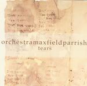

| Artist: | Orchestramaxfieldparrish |
| Title: | Tears |
| Label: | Faith Strange FS2 |
| Length(s): | minutes |
| Year(s) of release: | 2002 |
| Month of review: | [06/2005] |
| 1) | Beauty And Wonder | 1.39 |
| 2) | Dorothea Gets Her Wish | 5.30 |
| 3) | ...And Then A Crowd, Impossible To Number... | 3.33 |
| 4) | A Lot Like You | 8.01 |
| 5) | Where The Angels Crash And Die | 4.55 |
| 6) | Bow | 8.19 |
| 7) | Waiting For Twilight | 5.28 |
| 8) | The Tears Of Christ | 17.26 |
| 9) | Music From The Empty Corner | 12.08 |
A Lot Like You has warm piano playing, strings, acoustic guitar and a zooming bass sound, while Where The Angels Crash And Die (I really like that title) is rather experimental and eerie. Lots of things happening at the same time making it come off as rather chaotic. Think of Frippians soundscapes on The Gates Of Paradise. Incidental drum work occurs on this one.
With Bow we are back to serene ambient, complete with the tinkle of bells. Comparisons can be made to the excellent More Than A Just A Seagull by Gandalf here, although Orchestramaxfieldparrish is a bit less melodic. Waiting For Twilight continues on a soothing note with ambientish bass and guitar. Think Fripp, Sylvian and Eno (but mainly the former, as on his That Which Passes).
The final two pieces are of more than respectable length, and are more Soundscapes like in essence. The first of these is The Tears Of Christ, which indeed features only guitars. Music From The Empty Corner is similar but uses what is called a 'reaktor' instead. This is more in the line of typical Electronic Music ambient.